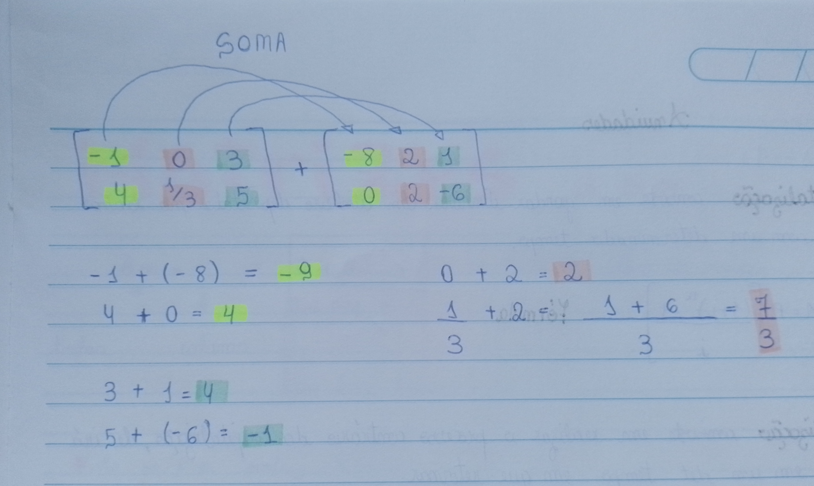

Se o número de linhas for diferente do número de colunas a matriz é RETANGULAR;
Se o número de linhas for igual ao número de colunas a matriz é QUADRADA;
O A pode ser definido como [Aij] ou [A] que eu mais utilizo;
Toda matriz quadrada tem duas diagonais que são definidas como "principal" e "secundária", ambas compartilham um único elemento em comum que é o número do centro da matriz.
Veja a imagem abaixo de um exemplo do meu caderno.
É quando só irá ter elementos (números) diferentes de 0 na diagonal principal.
| Matriz Diagonal | ||
|---|---|---|
| 5 | 0 | 0 |
| 0 | 20 | 0 |
| 0 | 0 | 9 |
É quando todos os elementos (números) da diagonal principal são todos "1".
| Matriz Identidade | ||
|---|---|---|
| 1 | 2 | 4 |
| 4 | 1 | -1 |
| 6 | 8 | 1 |
Toda vez que tivermos uma matriz identidade multiplicada por outra matriz o resultado será a matriz pela qual ela foi multiplicada, veja:
| Matriz Identidde | ||
|---|---|---|
| 1 | 3 | |
| 2 | 1 | |
| Matriz 3X2 | ||
|---|---|---|
| 0 | 0 | |
| 0 | 0 | |
| Matriz originada | ||
|---|---|---|
| 0 | 0 | |
| 0 | 0 | |
Na somatória de matrizes você irá ter duas matrizes para somar e gerar uma nova matriz.
Observe um exemplo:
Com esse exemplo que eu fiz e adaptei colocando cores é mais fácil de entender o processo, os elementos em amarelo foram somados uns com os outros, os elementos laranja foram somados e os verde também. Eu fiz os cálculos na folha para deixar explícito de onde veio os valores, cada valor gerado equivale a uma cor que condiz aos números somados.
| Nova Matriz | ||
|---|---|---|
| -9 | 2 | 4 |
| 4 | 7/3 | -1 |
Na subtração de matrizes você terá duas matrizes para subtrair uma pela outra.
Observe um exemplo:
Todos os elementos (um por um) de uma matriz serão inteiramente multiplicados por um escalar(único número) que irá gerar uma nova matriz, observe os exemplos abaixo.
| Matriz 2X2 | |
|---|---|
| 2 | 0 |
| 1 | -4 |
Essa matriz será multiplicada pelo escalar (-3).
| Nova Matriz | ||
|---|---|---|
| -6 | 0 | |
| -3 | 12 | |
Outro exemplo, essa matriz será multiplicada pelo escalar 5.
| Matriz 2X3 | ||
|---|---|---|
| 0 | 1 | -2 |
| 1 | 4 | -1 |
| Nova Matriz | ||
|---|---|---|
| 0 | 5 | -10 |
| 5 | 20 | -5 |
Para ser possível realizar a multiplicação de matrizes o número de colunas da 1ª matriz tem que ser igual ao número de linhas da 2ª matriz, se esse detalhe não for notado na matriz a multiplicação não poderá ser realizada, ou seja, ela não irá existir e deverá ser informada com o símbolo de "não existe" no exercício.
Mas como fazer essa multiplicação?
| Matriz 2X2 | |
|---|---|
| 2 | -1 |
| 0 | 3 |
Essa matriz será multiplicada por outra.
| Matriz 2X2 | |
|---|---|
| 1 | 3 |
| -1 | 2 |
Observe que só será possível realizar essa multiplicação porque a 1ª matriz tem o mesmo nº de colunas que as linhas da 2ª matriz!
| Multiplicação | |
|---|---|
| 2.1 + (-1).-1 | 2.3 + (-1).2 |
| 0.1 + 3.(-1) | 0.3 + 3.2 |
| Nova matriz | |
|---|---|
| 3 | 4 |
| -3 | 6 |
A matriz transposta é descrita como A^t, para entendê-la é muito fácil, quando forem dadas uma ou mais matrizes e uma delas estiver elevada a "t" será transposta, isso quer dizer basicamente que, as linhas dessa matriz serão agora as colunas. Observe abaixo alguns exemplos.
| Matriz 2X3 | ||
|---|---|---|
| 1 | 0 | -2 |
| 3 | 1 | -1 |
| Transposta 3X2 | |
|---|---|
| 1 | 3 |
| 0 | 1 |
| -2 | -1 |
Analise abaixo um exercício com matriz transposta:
| Matriz 3X2 | ||
|---|---|---|
| 2 | -1 | |
| 0 | 3 | |
| 1 | 4 | |
| Matriz Transposta | ||
|---|---|---|
| 2 | 0 | 1 |
| -1 | 3 | 4 |
| Matriz B | ||
|---|---|---|
| 1 | 4 | -5 |
| 2 | 3 | 0 |
Faça o cálculo A^t- 3.B
Para fazermos esse cálculo temos que transformar a matriz transposta denovo como ela era e depois multiplicar todos os elementos da matriz B por (-3)
| Matriz B multiplicada por 3 | ||
|---|---|---|
| -3 | -12 | 15 |
| 6 | -9 | 0 |
| Matriz 3X2 | ||
|---|---|---|
| 2 | -1 | |
| 0 | 3 | |
| 1 | 4 | |
Agora precisamos somar essas duas matrizes e ver qual matriz irá surgir.
| Matriz 3X2 originada da soma | ||
|---|---|---|
| -1 | -12 | 16 |
| 5 | -6 | 4 |
Agora que você já sabe alguns conceitos de matrizes, na página a seguir você poderá informar suas matrizes e realizar algumas operações como multiplicar por um escalar, soma, subtração e multiplicação de duas matrizes.